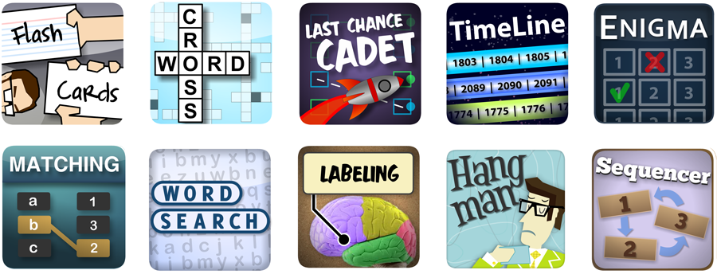
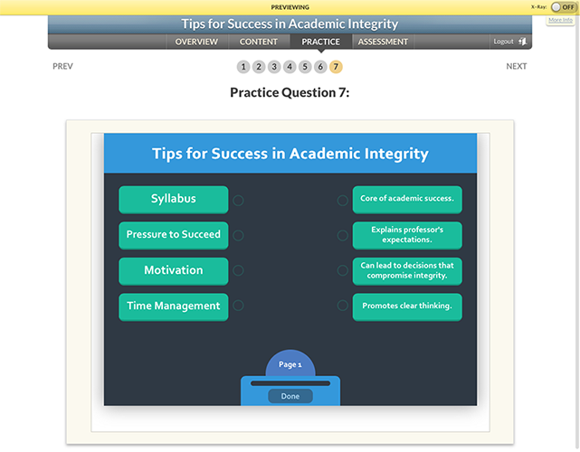

Learning Systems & Technologies
New Media | Techrangers
Materia is a web application which allows you to build educational widgets.
Widgets?
Games, study tools, etc...
(Our library is always growing)
Create self-contained, directed learning modules with Obojobo.
It's the other system we've developed alongside Materia.
Obojobo works great with Materia widgets too!
We Built Them!
Materia & Obojobo were created here at UCF.

And you can be involved!
- Have an idea? Talk to your instructional designer!

Questions / Live Demo
(Don't write it down, it's on your quick start guide!)